Vozes, filtros e captura
Guia da edição plugin. Os rótulos abaixo seguem a interface nativa. Esta edição é alfa; as capturas mostram a interface nativa em desenvolvimento. English · Manual principal · Guia dos módulos · Efeitos e roteamento
FILTER 2
Onde: SYNTH → FILTER / EG2 / OUTPUT → VOICE FILTER → FILTER 2. A troca de aba escolhe qual filtro você edita; ROUTE escolhe o caminho do som.
| ROUTE | Caminho | MIX em 0% → 100% |
|---|---|---|
| OFF | Segundo filtro fora do caminho | Sem contribuição do FILTER 2 |
| SERIES | FILTER 1 → FILTER 2 | Primeiro filtro sozinho → os dois em série |
| PARALLEL | Os dois recebem o sinal em paralelo | Primeiro filtro → segundo filtro |
| STEREO | FILTER 1 à esquerda; FILTER 2 pode substituir o filtro da direita | À direita: primeiro filtro → segundo filtro |
TYPE oferece os tipos de filtro de voz, exceto SK CASC (HP > LP): LPF 12/24/SK/OTA, HPF 12/24/SK, BPF 6/12, BRF 6/12, SK LPF/HPF HOT e CMOS LP/HP/BP/DIST. O número indica a família de resposta apresentada pelo instrumento; consulte o guia de filtros.
| Controle | Uso |
|---|---|
| CUTOFF | Frequência de corte, mostrada em Hz/kHz |
| RESO | Ressonância, 0–100% |
| DRIVE | Ganho de entrada, ×1–×8, nos tipos saturantes; os tipos SVF são lineares |
| EG2 INT | Intensidade bipolar do mesmo EG2, mostrada em semitons; não cria outro envelope |
| KEY | Acompanhamento da nota a partir de KEY CTR; +100% desloca um semitom por semitom; −200% a +200% |
| MIX | Mistura conforme a rota da tabela; não é um volume mestre |
Experimente: escolha PARALLEL, configure cortes diferentes nos dois filtros e percorra MIX. Depois escolha SERIES para ouvir o segundo filtro atuando sobre o primeiro. Comece com ressonância baixa.
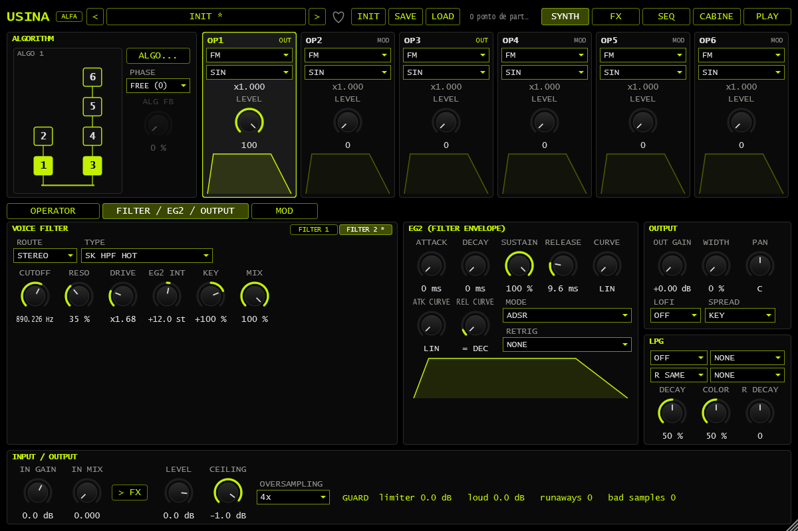
FILTER 2 em STEREO, com MIX e EG2 compartilhado.
FILTER nos slots de FX
Onde: FX → FX A, FX B, AUX ou LOOP → escolha um slot → FILTER. O texto da interface é FILTER; nesta explicação, “efeito de filtro” distingue essa etapa do filtro de cada voz. Processa o sinal do barramento, que pode conter várias vozes.
| Controle | Uso |
|---|---|
| TYPE | Os mesmos tipos aplicáveis ao FILTER 2; SK CASC não está disponível |
| CUTOFF | 20 Hz–20 kHz |
| RESO | Realce da ressonância |
| DRIVE | ×1–×8 nos tipos saturantes; sem ação nos tipos SVF lineares |
| SPREAD | Separa os cortes dos dois canais; no máximo, uma oitava para cada lado. Positivo eleva o corte direito |
| FOLLOW | O corte acompanha o nível do sinal. Positivo abre quando o nível sobe; negativo fecha; zero não acompanha |
| MIX | Mistura o sinal seco e filtrado; no AUX, o retorno usa apenas o sinal filtrado |
| OUTPUT | Ganho de saída, −24 a +12 dB |
FOLLOW e dB: o controle aparece como percentual bipolar, não em dB. O nível que ele acompanha é calculado numa escala de −48 a 0 dBFS; no extremo do controle, a ação pode deslocar o corte em até quatro oitavas. OUTPUT, sim, é expresso em dB. Não confunda FOLLOW com detecção de notas ou acompanhamento da altura tocada.
Experimente: use um padrão com ataques e silêncios, corte moderado e FOLLOW positivo. Compare com FOLLOW zero. Para separar os canais, introduza um pouco de SPREAD; confira também em mono.
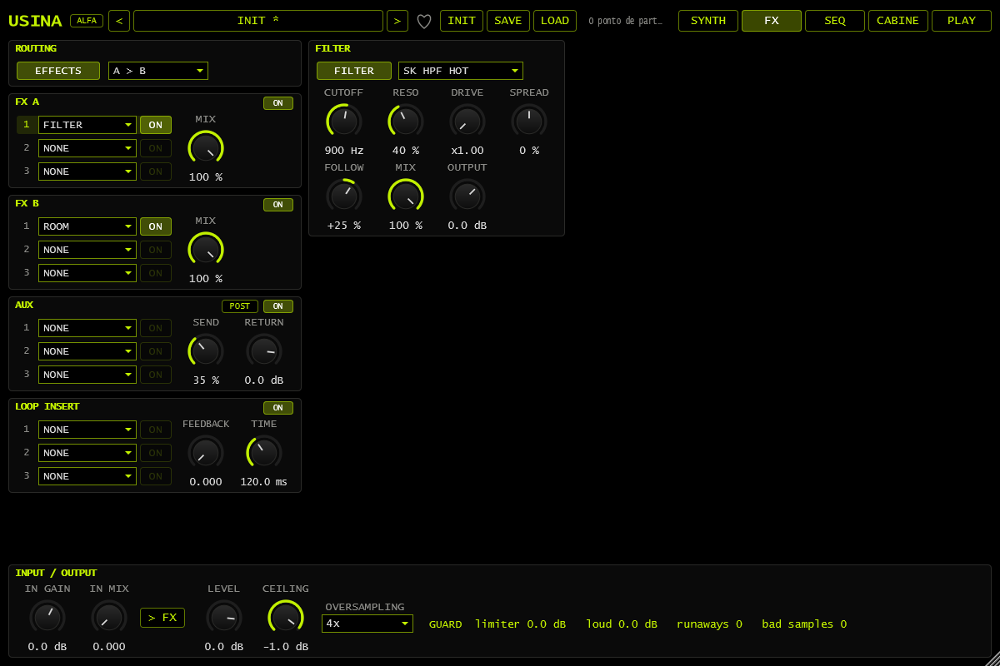
FILTER no primeiro slot de FX A; FOLLOW é exibido em porcentagem.
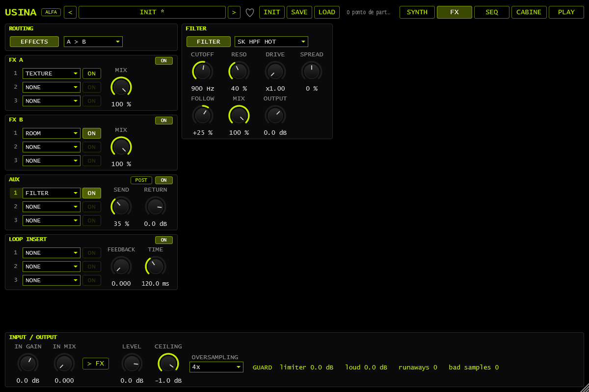
FILTER no AUX, com POST, SEND e RETURN.
LPG estéreo
Onde: SYNTH → FILTER / EG2 / OUTPUT → LPG, abaixo dos controles de saída. LPG combina atenuação e perda de agudos. DECAY e COLOR não são substitutos dos envelopes dos operadores.
| Lista/controle na interface | Comportamento |
|---|---|
| OFF / PING / EG2 / SOURCE | Modo do LPG principal. PING dispara por nota; EG2 acompanha o envelope; SOURCE acompanha a fonte escolhida |
| SOURCE | Fonte do modo SOURCE; uma fonte bipolar −1…+1 é lida como 0…1 |
| RIGHT: R SAME / R PING / R EG2 / R SOURCE | Modo do lado direito, chamado R MODE no formato de parâmetros. R SAME usa a mesma abertura do esquerdo; os outros usam uma abertura própria |
| R SOURCE | Fonte do lado direito quando RIGHT está em R SOURCE |
| DECAY | Fechamento principal, 0–100 |
| R DECAY | Deslocamento de −100 a +100 adicionado ao DECAY do lado direito; não é um tempo em segundos |
| COLOR | Conteúdo agudo que passa pelo LPG |
Experimente: mantenha PING no esquerdo, escolha R PING e diminua R DECAY. Toque uma nota curta e compare as caudas dos canais. Para uma abertura periódica, use SOURCE com um LFO. O parâmetro RIGHT é uma escolha de modo; não é um controle de pan.
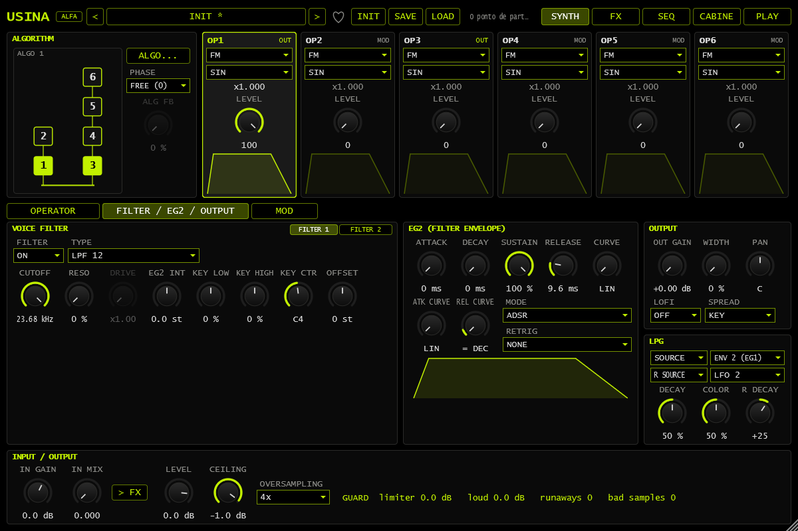
LPG em SOURCE; lado direito em R SOURCE com fonte e decay próprios.
CASC VCA SOURCE
Onde: FILTER 1 → TYPE → SK CASC (HP > LP). CASC VCA oferece GATE, EG2, ENV ou SOURCE. Em SOURCE, VCA SOURCE escolhe a modulação que controla o nível da etapa em cascata.
A cascata é uma etapa da parte, depois da soma das vozes. Esse VCA não é o LPG e não é o volume mestre. Escolha primeiro SOURCE em CASC VCA e depois a fonte em VCA SOURCE. Um LFO permite controlar o nível dessa etapa ritmicamente; comece sem aumentar a realimentação da cascata.
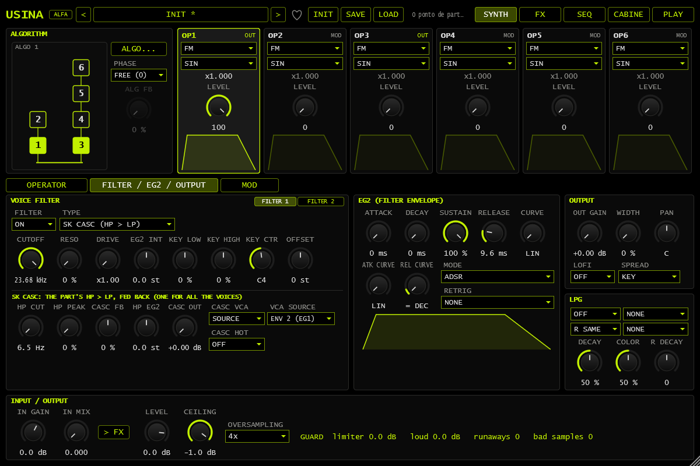
SK CASC com CASC VCA em SOURCE e VCA SOURCE selecionada.
Estéreo das vozes e dos operadores
Onde: SYNTH → FILTER / EG2 / OUTPUT → OUTPUT.
- SPREAD: KEY posiciona notas graves à esquerda e agudas à direita; ALTERNATE alterna o lado entre notas; RANDOM escolhe uma posição por nota.
- WIDTH: extensão dessa distribuição, 0–100%. Em zero, as vozes permanecem centralizadas.
- PAN: posição geral; centro, esquerda ou direita. Uma rota de modulação pode deslocar vozes individualmente.
- OFFSET, no FILTER 1: diferença do corte direito em relação ao esquerdo, de −48 a +48 semitons. Não é um segundo CUTOFF absoluto.
O WIDTH do operador fica em sua área de MODE. Em UNISON, separa as cópias pelos canais; em MODAL, separa dois pontos de captação. É diferente do WIDTH de OUTPUT, que posiciona notas completas. Não representa expansão estéreo em todos os modos de operador.
Experimente: compare WIDTH de OUTPUT com SPREAD ALTERNATE usando notas sucessivas. Depois mantenha uma única nota e ajuste o WIDTH de um operador UNISON: são duas formas distintas de criar espaço.
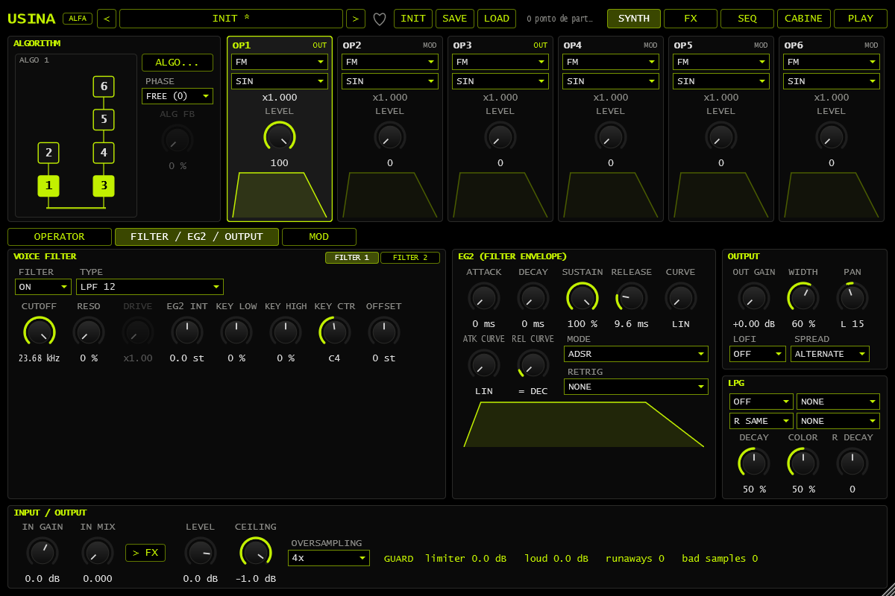
OUTPUT: distribuição ALTERNATE, WIDTH e PAN.
FILTER 1: OFFSET direito em +7 semitons relativo a CUTOFF.
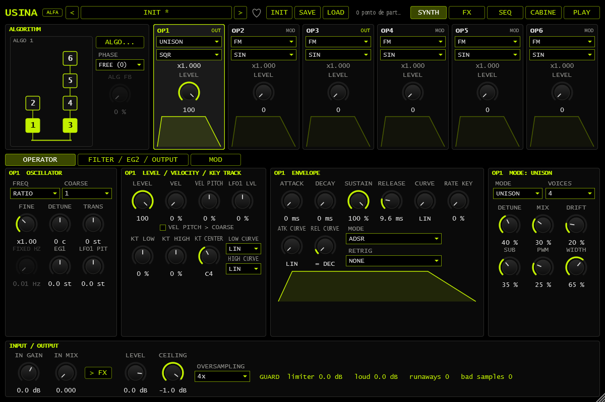
WIDTH do operador UNISON no painel de MODE.
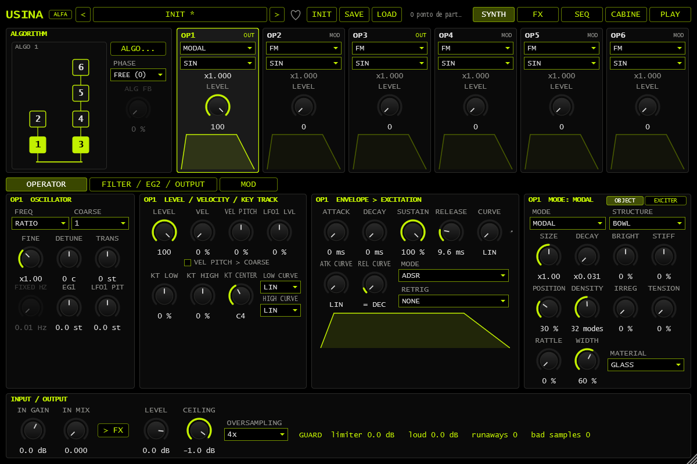
WIDTH do MODAL na aba OBJECT, junto aos controles do objeto.
UNISON
Onde: selecione um operador → MODE → UNISON.
VOICES escolhe 1–9 cópias; DETUNE afasta suas afinações; MIX combina a cópia central com as demais; DRIFT varia lentamente cada cópia. SUB acrescenta uma onda quadrada uma oitava abaixo. PWM movimenta a largura de pulso das ondas quadradas. WIDTH distribui as cópias em estéreo. A entrada do algoritmo continua modulando o operador.
Uma única voz ou MIX zero permite comparar com a onda central. Para ouvir PWM, escolha uma forma de onda quadrada; o controle não transforma qualquer onda em pulso.

UNISON com onda SQR, SUB, PWM e WIDTH.
BITS e COMB binário
BITS, em MODE do operador, trabalha a forma de onda como código numérico. BITS escolhe resolução de 1–16 bits; XOR inverte bits de uma máscara; KEEP remove bits baixos; OFFSET soma um deslocamento com retorno ao início da faixa. O resultado pode ter mudanças intensas de timbre. Não é um sequenciador de notas.
COMB, em SYNTH → MOD, transforma fontes de modulação. Os tipos binários leem −1…+1 como código de 8 bits e convertem o resultado de volta:
| Tipo | Função |
|---|---|
| BIT | Extrai um bit como sinal 0/1; AMOUNT escolhe o bit, e sinal negativo inverte a saída |
| XOR | Combina os códigos de SOURCE e MOD por inversão de bits |
| AND | Retém bits altos com AMOUNT positivo; bits baixos com AMOUNT negativo |
| ADD MOD 256 | Soma MOD escalado a SOURCE com retorno ao início ao ultrapassar a faixa |
Experimente: SOURCE em um LFO crescente, tipo BIT e destino num parâmetro com quantidade pequena. Trocar o bit produz divisões relacionadas. Isso cria uma modulação por degraus, não grava automaticamente eventos no sequenciador.
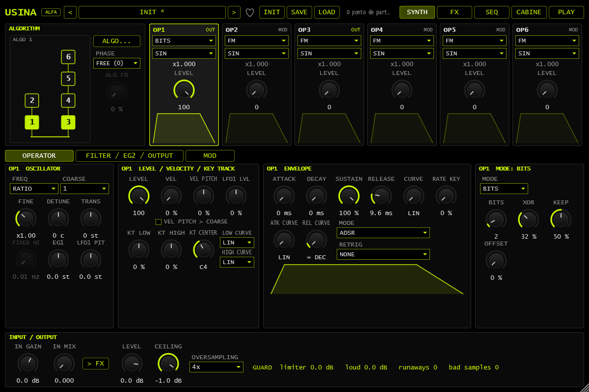
BITS: resolução, XOR, KEEP e OFFSET.
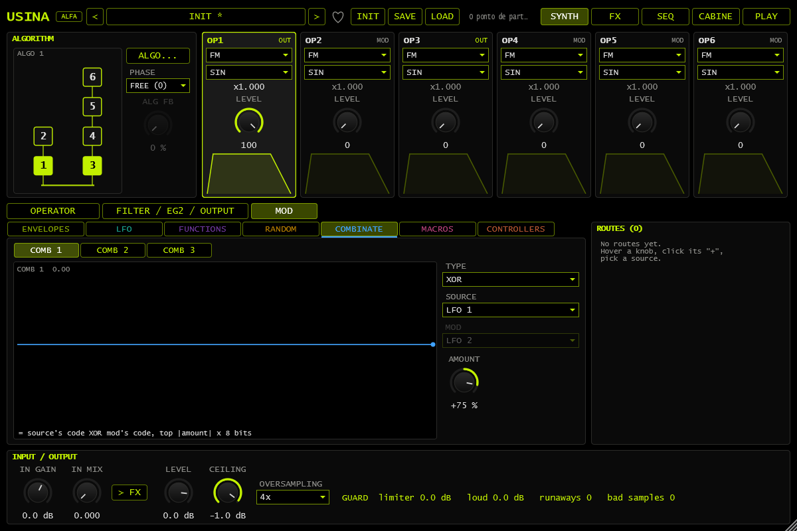
COMB binário XOR, fontes e fórmula.
MODAL: DAMP e DROP
Onde: operador → MODE → MODAL. Na aba EXCITER, DAMP aumenta o amortecimento depois de soltar a tecla. Em zero, o objeto mantém seu decaimento natural; não confunda com DECAY ou com o RELEASE que controla sua excitação.
Na área EXCITER, escolha DROP para uma sequência de impactos que representa a queda e os ressaltos do objeto. STRIKE e os controles do excitador definem a energia/contato conforme a configuração. DROP é uma excitação da voz; não adiciona passos ao sequenciador.
Experimente: toque um objeto ressonante, solte a nota e compare DAMP zero com um valor maior. Depois selecione DROP e compare seus impactos com uma única excitação STRIKE.
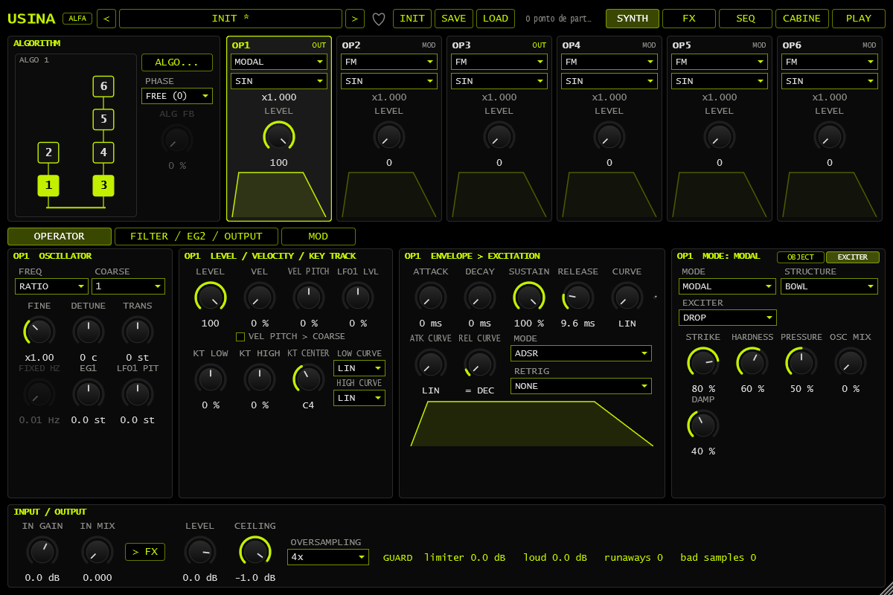
DAMP fica na aba EXCITER do MODAL e controla o amortecimento após soltar a nota.

DROP selecionado na aba EXCITER do MODAL.
SAMPLE: captura ao vivo
Onde: operador → MODE → SAMPLE. A área da gravação oferece quatro posições A–D, LOAD, CAPTURE, CLEAR, LENGTH e AUTO LVL. A escolha A–D determina a gravação usada; não equivale aos instantâneos de macros A–D da PLAY.
- Escolha a posição A–D de destino e configure a entrada de áudio. IN GAIN afeta o que será capturado; a captura ocorre antes de IN MIX, portanto IN MIX pode ficar em zero para não monitorar a entrada.
- Em LENGTH, FREE permite encerrar manualmente; 1 BAR, 2 BARS e 4 BARS limitam a duração. Com transporte em execução, a captura quantizada espera o próximo compasso. Com transporte parado, começa imediatamente.
- Acione CAPTURE. Na captura livre, acione novamente para encerrar. Na captura por compassos, o encerramento ocorre ao atingir a duração.
- AUTO LVL, ligado por padrão, ajusta a tomada para pico de −3 dBFS, com aumento limitado a +30 dB. Não recupera um sinal que já foi gravado distorcido.
- Toque e ajuste READ, START, LENGTH e XFADE/FADE do operador. O LENGTH de leitura da amostra é diferente do LENGTH da captura.
A tomada vira um arquivo de áudio referenciado pelo preset/sessão. Ao transferir o projeto, mantenha esses arquivos acessíveis; salvar o preset não embute automaticamente a gravação. A captura não muda o sample rate do projeto nem configura a interface de áudio por conta própria.
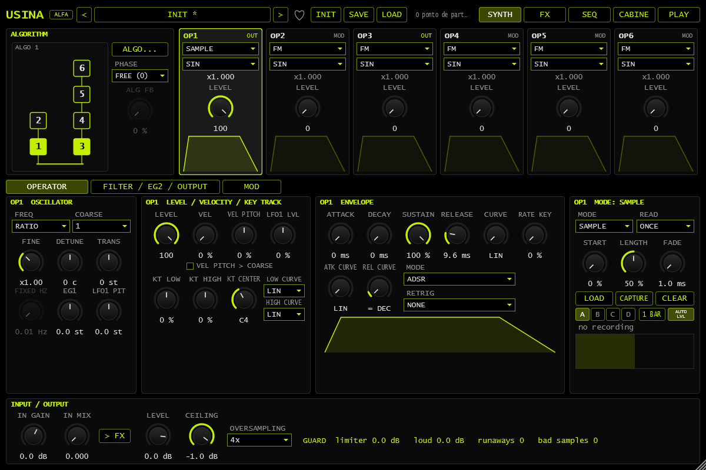
SAMPLE: slots A–D, controles de captura e LENGTH em 1 BAR.
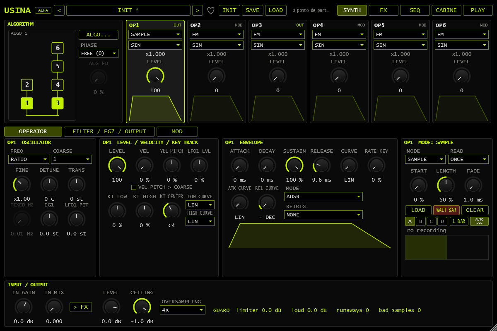
SAMPLE armado: WAIT BAR antes do início da captura.